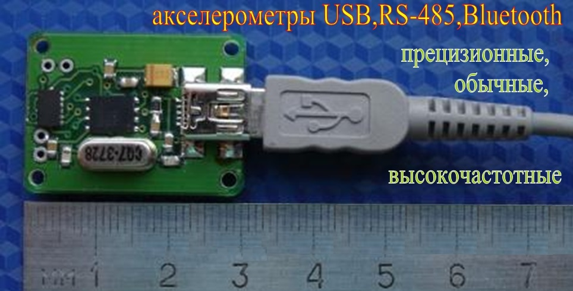
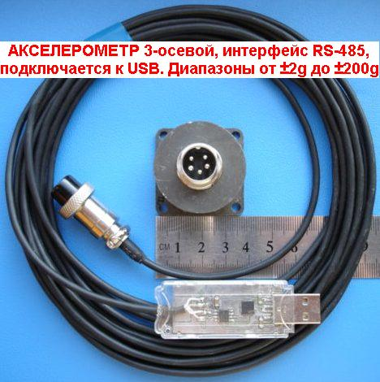
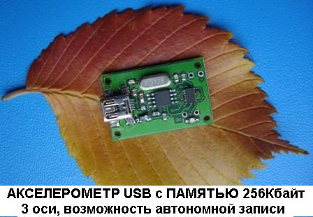

Акселерометры с
интерфейсами
USB, RS-485, Bluetooth ( беспроводные ),
с цифровыми
или аналоговыми выходами,
прецизионные (для
сейсмометрии, измерения малых ускорений).

Акселерометры прецизионные,
автономные; USB,
RS-485, Bluetooth,
с аналоговыми выходами от ±2g до ±500g, высокочастотные до 30кГц,
с программным
обеспечением для измерения и отображения результатов,
системы измерения ускорений "под ключ".

акселерометр
датчик
акселерометр
купить
датчик
акселерометр
купить
акселерометр

Каждому типу акселерометра посвящена отдельная страничка
с более полной
информацией, ссылки на них в левом верхнем углу страницы.
акселерометр
датчик
акселерометр
купить
датчик
акселерометр
купить
акселерометр
3
оси, интерфейс USB или RS-485,
питание от USB,
программно
переключаемые диапазоны ускорений ±2g/±4g/±8g,
широкий
динамический диапазон, низкий уровень шума, малый дрейф.
Новый прецизионный
MEMS-акселерометр с низким уровнем шума и малым дрейфом
предназначен для измерения малых ускорений, обладает широким
динамическим диапазоном. Высокая чувствительность акселерометра позволяет
использовать его в том числе для сейсмоизмерений.
Прецизионный акселерометр с интерфейсом RS-485

Прецизионный акселерометр
RS-485 подключается к USB компьютера, он способен
передавать данные по кабелю длиной в несколько десятков метров.
В комплекте плата прецизионного
акселерометра и плата адаптера RS-485<>USB.
Питается прецизионный
акселерометр по USB от компьютера.
Габариты платы прецизионного
акселерометра 29х29мм, ее можно обрезать, получив круг
диаметром 29мм для размещения в представленном на следующем
фото корпусе:

Адаптер
RS-485<>USB после распайки кабеля можно поместить в
термоусадочную трубку (правое фото) - получается прочный корпус.
Прецизионный акселерометр USB

прецизионный акселерометр
USB подключается к компьютеру стандартным кабелем USB
длиной до 1,8м,
питание по USB от компьютера.
3
оси, четыре
программно переключаемых диапазона измеряемого ускорения
акселерометр
Bluetooth 16g: ±2g/±4g/±8g/±16g
акселерометр
Bluetooth 200g: ±25g/±50g/±100g/±200g
Ознакомьтесь с полной информацией об акселерометре Bluetooth
Можно посмотреть ВИДЕО Акселерометр
Bluetooth - измерение в автономном режиме с графиком в реальном времени

Комплект:
акселерометр Bluetooth
и
Bluetooth-USB
адаптер
") Акселерометр
Bluetooth с
аккумулятором
Акселерометр
Bluetooth с
аккумулятором
LP302030-PCM-LD,
3,6В 130мА;
габариты этого аккумулятора чуть меньше габаритов
платы,
а
заряда хватит на несколько
часов работы (см. Потребляемый
ток).
Акселерометр
Bluetooth 16g и акселерометр
Bluetooth 200g изготавливаются
на одинаковых платах, их отличие в диапазонах измеряемых ускорений.
Остальные параметры и программное обеспечение идентичны.
Акселерометр Bluetooth может
передавать результаты измерения при работе с прилагаемым адаптером в
компьютер на расстояние в несколько десятков метров.
Интерфейс приложения
мало отличается от интерфейса приложения для акселерометров USB и
RS-485; также, как для этих акселерометров,
графики строятся по окончании передачи данных.
Дополнительная
возможность приложения Акселерометра Bluetooth - при
частоте выборки не
более 100Гц возможно измерение с просмотром
графика
сигналов в реальном
времени
(режим осциллографа - график "бежит" по экрану), видео Акселерометр
Bluetooth демонстрирует именно
этот режим.
Для ознакомления с приложением и результатами измерения можно скачать
архив с демо-приложением и Справочной системой для акселерометра USB acc-usb
. Демо-приложение позволяет открывать и обрабатывать файлы данных,
записанные акселерометрами. Архив с некоторыами файлами данных
находится здесь: dataAcc-usb
.
3
оси, четыре
диапазона ускорения
акселерометр
USB 16g: ±2g/±4g/±8g/±16g
акселерометр
USB 200g: ±25g/±50g/±100g/±200g
питание
от USB,
опционально: энергонезависимая
память
256КБайт
с возможностью автономной
записи сигналов (при питании от батарейки)

акселерометр
( датчик ускорения )
Презентация акселерометра: accelerometer.pps -измерение
на калибраторе
ускорений, обработка сигнала (устранение шумов, вычисление спектра,
тренда)
Презентация
работы акселерометра
в автономном
режиме: autonomous.pps
Отчет об измерении малых ускорений акселерометром с графиками и
спектрами можно прочесть, скачав файл accelerometer.pdf
кабель
десятки метров, 3 оси,
четыре
диапазона ускорения:
акселерометр
RS-485 16g: ±2g/±4g/±8g/±16g
акселерометр RS-485
200g: ±25g/±50g/±100g/±200g
RS-485
для работы на длинный
кабель (десятки метров), адаптер RS-485 <=> USB,
USB-питание
Акселерометр
с
интерфейсом RS-485
позволяет
отнести цифровую
измерительную часть на несколько
десятков метров от
компьютера, передача ЦИФРОВЫХ
данных выполняется по 4-проводному кабелю
до 100м ,
по нему же
акселерометр
с
интерфейсом RS-485 питается от компьютера .
ВИДЕО Измерения
акселерометром
RS-485
Акселерометр
RS-485
отличается от акселерометра
USB только возможностью использовать длинный кабель.
Акселерометры
с аналоговыми выходами
работают на кабель
(десятки метров) и низкоомную нагрузку,
представлены также АЦП для приема и
оцифровки сигналов.
Наиболее чувствительный акселерометр измеряет ускорения в диапазоне ±1,5g.
Большинство акселерометров с аналоговыми
выходами позволяют измерять ускорения в диапазоне частот от 0 до 1кГц.
Высокочастотные акселерометры
способны измерять ускорение в диапазоне частот от 0 до 30кГц.
Они могут применяться для исследования ударов,
а также
процессов, требующих высокого
разрешения по времени.
Возможно изготовление высокочастотных
акселерометров
для ударных воздействий
с диапазонами ускорений ±70g, ±250g или ±500g в
комплекте с АЦП или отдельно.
и
Система измерения
включает в себя два высокочастотных
акселерометра, 2-канальный аналоговый
фильтры НЧ, аналого-цифровой
преобразователь с памятью.
Специфические
требования к приборам
для измерения ударов - использование
высокочастотных
акселерометров с большим запасом по ускорению
и фильтрация сигналов
акселерометров аналоговым
(обязательно) фильтром НЧ с крутым спадом АЧХ (не хуже
-40дБ/октава). Предлагаемые системы соответствуют требованиям ISO к
регистрирующим приборам для испытаний на удар .
ВИДЕО Испытания ж/д
цистерны на удар
ВИДЕО Испытания
велосипедных шлемов на удар